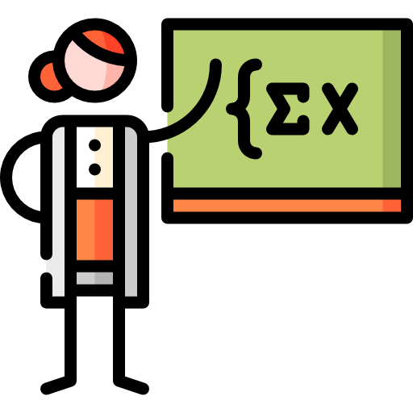

Quién es Ada Lovelace?
Aquí te dejamos algunos datos sobre la vida de Ada Lovelace.
Ada Lovelace nació el 10 de diciembre de 1815, en Londres, como Augusta Ada Byron. Era hija del poeta Lord Byron y de Anne Isabella Milbanke.
Conoció al matemático Charles Babbage, quien la introdujo en su trabajo sobre la máquina analítica, la primera computadora mecánica.
Su trabajo sentó las bases para el desarrollo del software y la programación, aunque su contribución no fue reconocida hasta mucho después.
Su madre, interesada en la matemática, fomentó su educación en ciencias y matemáticas, alejándola de la influencia poética de su padre.
Tradujo un artículo del matemático italiano Luigi Federico Federico, añadiendo notas que contenían el primer algoritmo destinado a ser procesado por una máquina.

Ada Lovelace murió el 27 de noviembre de 1852, a los 36 años, de cáncer de útero.